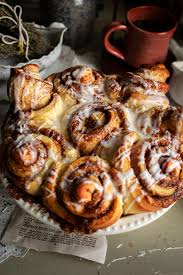

Cinnamon Roll Recipe

Fluffy n Sweet Cinnamon Roll's
A sweet, soft pastry made from a yeasted dough that
is rolled up with a cinnamon-sugar filling, then baked
to perfection. Once golden and puffed up, these rolls are
often topped with a creamy glaze or frosting. The combination
of the warm, spiced cinnamon filling and the soft, fluffy dough
creates a mouthwatering treat that is often enjoyed for breakfast
or as a dessert. The aroma of freshly baked cinnamon rolls fills
the air, making them an irresistible indulgence.
Ingredients
- For the Dough:
- 1 cup (240 ml) whole milk
- 1/2 cup (115 g) unsalted butter, melted
- 1/2 cup (100 g) granulated sugar
- 2 1/4 teaspoons (1 packet) active dry yeast
- 4 cups (500 g) all-purpose flour
- 1 teaspoon salt
- 2 large eggs
- For the Cinnamon Filling:
- 1/2 cup (115 g) unsalted butter, softened
- 1 cup (200 g) packed brown sugar
- 3 tablespoons ground cinnamon
- 1/4 teaspoon salt
- For the Glaze
- 1 cup (120 g) powdered sugar
- 2 tablespoons unsalted butter, melted
- 2 tablespoons whole milk
- 1/2 teaspoon vanilla extract
- Prepare the Dough:
- Warm the milk in a small saucepan or microwave until it’s about 110°F (43°C).
- In a bowl, combine the warm milk, melted butter, and granulated sugar. Stir until the sugar dissolves.
- Sprinkle the active dry yeast over the milk mixture, let it sit for about 5-10 minutes until it becomes frothy.
- In a large bowl, mix the flour and salt. Add the yeast mixture and eggs, and stir to combine.
- Knead the dough on a floured surface for about 6-8 minutes until it becomes smooth and elastic. You can also use a stand mixer with a dough hook for this step.
- Place the dough in a lightly greased bowl, cover it with a damp cloth, and let it rise for about 1-1.5 hours, or until doubled in size.
- In a small bowl, mix the softened butter, brown sugar, cinnamon, and salt until smooth.
- Once the dough has risen, punch it down to release the air. Transfer it to a floured surface and roll it out into a large rectangle (about 16x12 inches).
- Spread the cinnamon-sugar filling evenly over the rolled-out dough, leaving about an inch border on all sides.
- Roll and Cut the Dough
- Starting from one edge, carefully roll the dough into a tight log.
- Slice the log into 12 equal pieces (you can use dental floss or a sharp knife for clean cuts).
- Arrange and Rise
- Place the cinnamon rolls in a greased 9x13-inch baking pan, leaving a little space between each one.
- Cover the pan with a cloth and let the rolls rise for 30-45 minutes, or until they are puffed and nearly doubled in size.
- Bake the Rolls
- Preheat the oven to 350°F (175°C).
- Bake the cinnamon rolls for 25-30 minutes or until they are golden brown.
- In a small bowl, whisk together the powdered sugar, melted butter, milk, and vanilla extract until smooth.
- Frost the Rolls
- Once the rolls are done baking, remove them from the oven and let them cool slightly.
- Drizzle the glaze over the warm cinnamon rolls.
Home